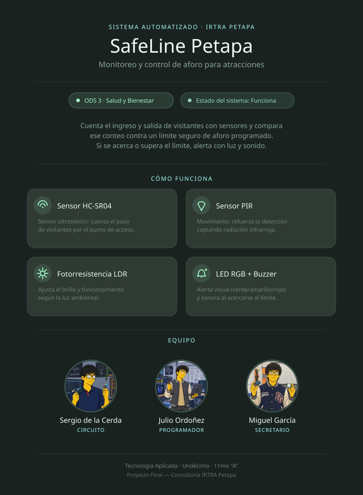

[Rol en el equipo]
[Nombre Apellido]
[Rol técnico o responsabilidad dentro del proyecto]
[Resumen breve del proyecto en 2–3 líneas: qué problemática operacional, de seguridad, de entretenimiento o energética del parque IRTRA Petapa resuelve el sistema electrónico autónomo diseñado por el equipo, y cómo se alinea con el ODS seleccionado.]
[Describe aquí la problemática operacional, de seguridad, de entretenimiento o energética identificada en IRTRA Petapa — real o inventada. Explica el contexto de la empresa consultora y por qué esta problemática es relevante para el parque.]
[Explica cómo el sistema electrónico autónomo diseñado (el circuito simulado en Tinkercad) resuelve o automatiza esta problemática, y de qué forma se alinea estrictamente con el ODS seleccionado.]

[Breve descripción técnica del circuito: qué hace, cómo reacciona a las entradas de los sensores, y qué lógica de control implementa el código en C++.]
assets/img/tinkercad-captura.svg por tu captura real (PNG o JPG legible).
assets/video/circuito-demo.mp4.
Informe completo de la consultoría — 5 temas principales y 18+ subtemas alineados con el IRTRA Petapa, con hojas de colchón, tablas y esquemas en orientación horizontal, y referencias en Normas APA generadas nativamente en Microsoft Word. Disponible en formato .docx y .pdf en el repositorio del proyecto.
docs/ de este repositorio y actualiza los enlaces de arriba.
Resumen visual del proyecto para las autoridades del IRTRA Petapa: nombre creativo de la solución, avatares del equipo generados con IA, resumen, ODS impactado y estado del sistema.

assets/img/infografia.svg por tu infografía final (PNG, JPG o PDF exportado como imagen).
Explicación en audio de la lógica del sistema y su impacto en el IRTRA Petapa. Duración máxima: 5 minutos.
¿Lo subieron a YouTube en oculto? Reemplacen este reproductor por un
<iframe> de YouTube, o dejen un enlace directo aquí:
[enlace al podcast]
[Rol técnico o responsabilidad dentro del proyecto]
[Rol técnico o responsabilidad dentro del proyecto]
[Rol técnico o responsabilidad dentro del proyecto]
assets/img/avatar-1.svg, avatar-2.svg y avatar-3.svg por los avatares generados con IA (Reto de Prompt Engineering: eviten el acabado "genérico de IA").